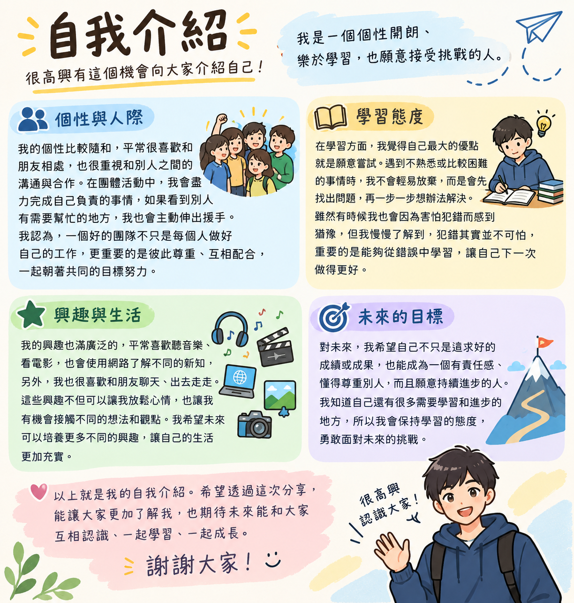

大家好，我是一個個性開朗、樂於學習，也願意接受挑戰的人。很高興有這個機會向大家介紹自己。對我而言，每一次與人交流、學習新事物的過程，都是認識自己、累積經驗的重要機會。 我的個性比較隨和，平時喜歡和朋友相處，也很重視與他人之間的溝通與合作。在團體活動中，我會盡力完成自己負責的事情，也願意在別人需要幫助時伸出援手。我認為，一個好的團隊不只是每個人做好自己的工作，更重要的是彼此尊重、互相配合，朝著共同的目標努力。
在學習方面，我覺得自己最大的優點是願意嘗試。遇到不熟悉或比較困難的事情時，我不會輕易放棄，而是會先找出問題，再一步一步想辦法解決。雖然我有時候也會因為害怕犯錯而猶豫，但我慢慢了解到，犯錯並不可怕，重要的是能從錯誤中學習，讓自己下一次做得更好。我的興趣相當廣泛，平常喜歡 聽音樂、看電影、使用網路了解不同的新知識，也喜歡和朋友聊天、出去走走。這些興趣不但能讓我放鬆，也讓我有機會接觸不同的想法與觀點。我希望未來能夠培養更多興趣，讓自己的生活更加充實。
對未來，我希望自己不只是追求好的成績或成果，也能成為一個有責任感、懂得尊重別人並且願意持續進步的人。我知道自己的能力還有許多不足，因此我會保持學習的態度，勇敢面對新的挑戰。以上就是我的自我介紹。希望透過這次分享，能讓大家對我有更多的了解，也期待未來能和大家互相認識、一起學習、一起成長。謝謝大家！
